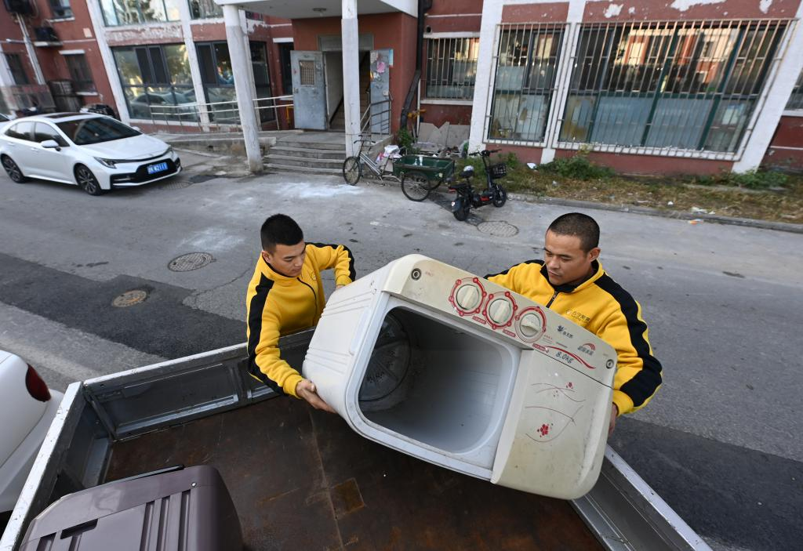
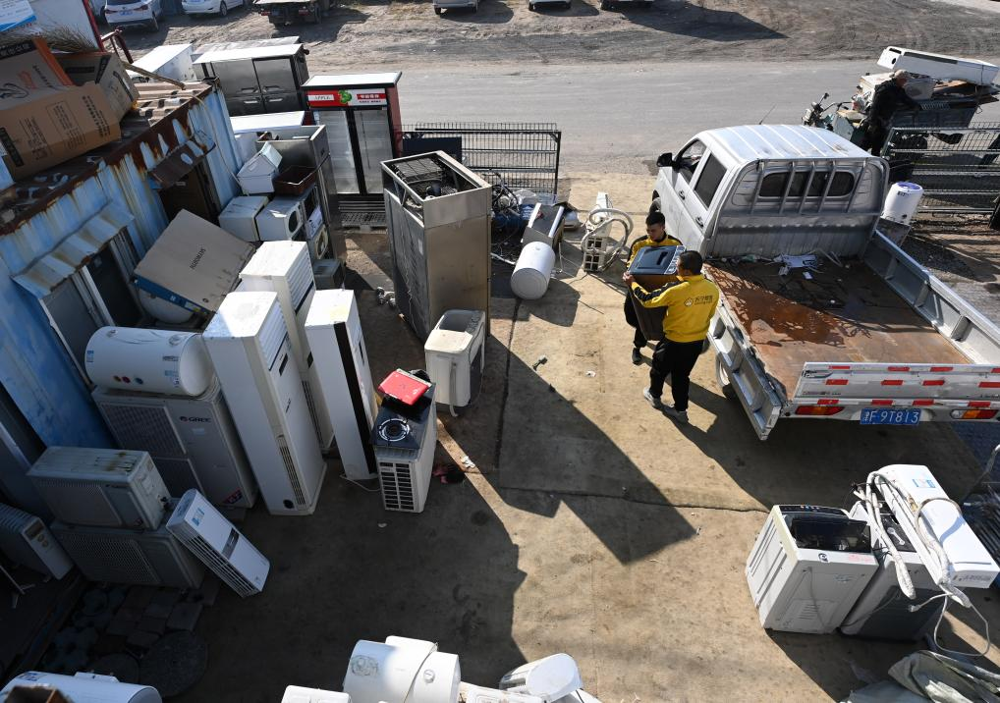
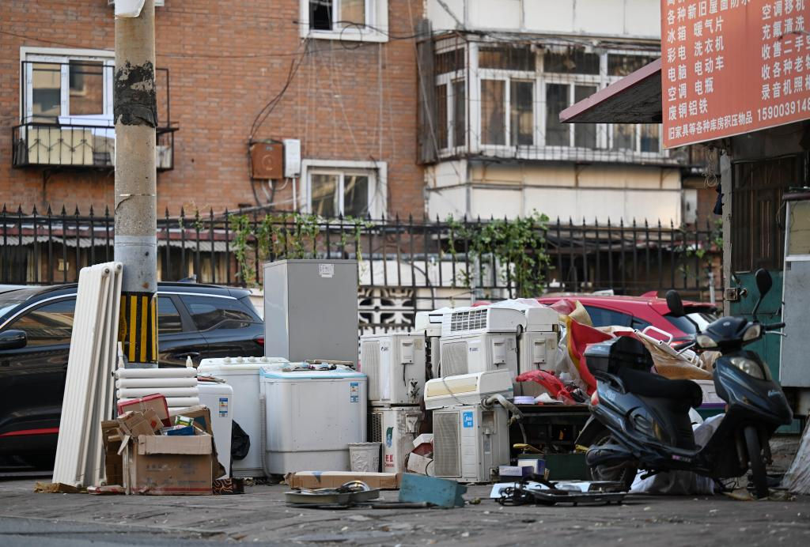

0万
可能处于相关工业与废物处理风险环境Health risk
风险最终会落到具体的人身上。
世界卫生组织（World Health Organization）关于电子废弃物暴露与儿童健康的报告提示，全球可能有多达 1800 万儿童和青少年、1290 万女性在非正规废物处理部门工作，或生活在处理活动附近，并面临相关健康风险。
暴露并不只发生在垃圾堆旁。手工拆解、破碎、露天焚烧和酸洗会产生粉尘、烟雾与废液；污染物可能经呼吸、误食和皮肤接触进入身体，也可能附着在衣物、工具与鞋底上，从作业点被带回居住空间。
儿童仍处于神经与呼吸系统发育阶段，女性则可能同时处在处理劳动、孕产健康与家庭照护的交叉位置。于是，一台设备的末端风险不会停在某个工位，而会沿着劳动关系与家庭空间继续扩散。
这些数字不直接对应中国，却揭示了一个更普遍的分配问题：电子产品带来的便利可以跨越地域共享，拆解和污染的代价却更容易落在议价能力更弱、也更难退出现场的人身上。
数据来源：世界卫生组织（World Health Organization）《Children and digital dumpsites: e-waste exposure and child health》，用于提示全球健康风险背景。
WHO / E-WASTE EXPOSURE
GLOBAL HEALTH CONTEXT
风险不会平均落下
0万
可能在非正规废物处理部门面临暴露暴露如何进入身体路径示意
粉尘与烟雾吸入
污染食物与水摄入
拆解残留物皮肤接触
风险节点悬停查看暴露含义
高风险环节拆解 / 焚烧 / 酸洗 / 堆放
健康指向神经发育 / 呼吸 / 生殖与孕产健康
RISK TRANSFER / FOUR HANDOVERS
悬停节点查看责任变化
同一台设备，风险在交接中换了主人
信息完整度完整
议价能力较高
身体暴露较低
前端：便利与信息末端：暴露与材料
Risk transfer
便利、利润、风险并不在同一个位置。
购买和换新发生在前端，估价和转卖发生在中段，粉尘、焊料、酸洗与燃烧残留物则更可能出现在后端。设备向下游移动时，商品价值逐渐变成材料价值，身体暴露却沿相反方向上升。
一台完整设备拥有品牌、型号、序列号、购买凭证和原主人；经过多次转手与拆机后，它只剩电池、主板、金属和塑料。物质仍在，身份却不断变薄。信息的消失，使所有权、位置和处理责任越来越难被连续核验。
这不是简单的个人选择，而是距离与议价权的分配：谁能够把旧设备交出去，谁就离风险远一点；谁必须把它拆开、分拣和提取，谁就更接近粉尘、烟雾、废液与最低报价。
因此，“干净”常常只是前端的观感。风险并没有被消除，而是被推迟、转手并安置到更远的地点和更沉默的人身上。便利留在上游，代价沉到末端，这才是同一台设备在不同人手中呈现出的不平等。
Work chain
“回收”不是一个按钮，而是一连串人的工作。
HANDOVER 01 / 04消费者责任交接单
完成换新，旧设备离开视线。
TRACE 01 / RECORD
留下的记录
购买凭证、设备型号和原始所有者仍能把设备与一个家庭对应起来；但只有在上门回收、门店接收和平台订单被写入同一条记录时，这份身份才会跟着旧设备继续移动。



Words of risk
这条链上的关键词，越来越接近身体。
DEVICE → PROCESS → MEDIUM → BODY词语不是并列的，它们有方向。悬停或点击任一节点，查看风险如何沿着处理链传递
01 / 设备
02 / 工序
03 / 介质
04 / 身体
DEVICE 01旧手机与旧家电
设备离开原使用场景时仍有型号、序列号和原主人。真正的风险从身份与去向开始脱钩时出现。